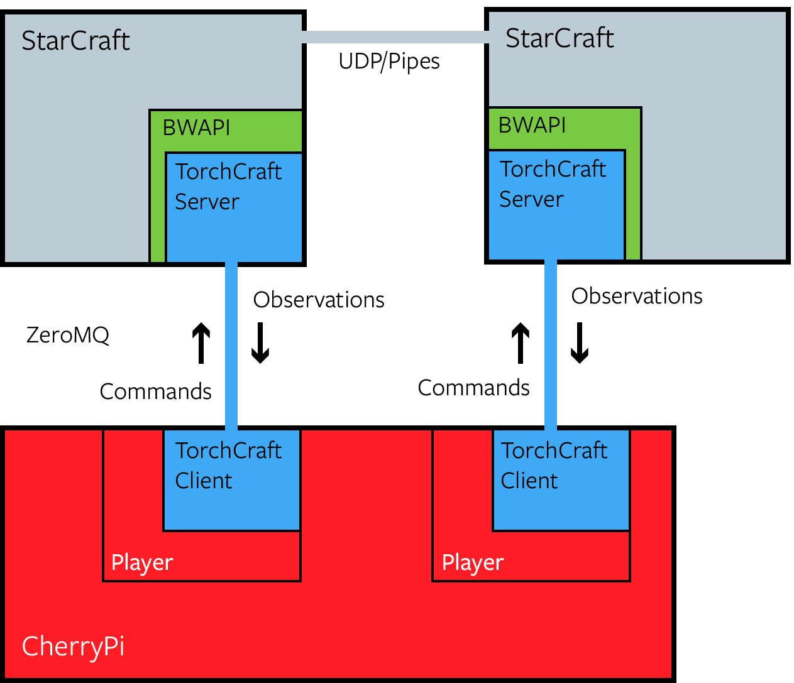

System Architecture
TorchCraftAI builds upon two existing OSS projects for StarCraft bot development: BWAPI and TorchCraft. This page aims to provide a quick overview of those and then describes how TorchCraftAI is used for bot development from high-level point of view.
Foundations
The Brood War API (BWAPI)
BWAPI is a programming interface that is widely used for developing competitive bots for StarCraft: Brood War. During a game, it provides access to all information that would be observable by a human player and enables programmatic game control. StarCraft: Brood War is a Windows game, so BWAPI StarCraft bots are developed on Windows and commonly are either 32-bit dynamic libraries (DLLs) or 32-bit executables using BWAPI's client mode.
TorchCraft
TorchCraft facilitates machine learning research on StarCraft: Brood War by providing a cross-platform bridge to BWAPI using a client-server architecture. The server is a Windows DLL for BWAPI but the client program can be defined more flexibly, e.g. as a C++ program running on Linux or as a Python script. Its mode of operation is conceptually simple: a TorchCraft client sends a list of game commands to the server; the server executes the corresponding BWAPI calls and replies with an updated game state.
TorchCraftAI
TorchCraftAI wraps the TorchCraft client C++ library and provides abstractions for the game loop and game state. The list of core features includes
- The ability to host several clients in the same process, which amounts to playing several StarCraft games in parallel
- Utilities for launching StarCraft games from within a TorchCraftAI program make writing training loops, tests and scenarios convenient
- A library for distributed reinforcement learning
As an example, here's the complete picture for a setup in which two TorchCraftAI bots play against each other:

In this program, two TorchCraftAI Player wrap two distinct TorchCraft clients, each controlling one party in a two-player StarCraft game. Two synchronized instances of StarCraft: Brood War are required for this, and each one loaded BWAPI and the TorchCraft server DLL. The Player instances can be used sequentially or in parallel and can run the same game-play logic or not. For an example using this setup to perform reinforcement learning, head over to the building placement tutorial.